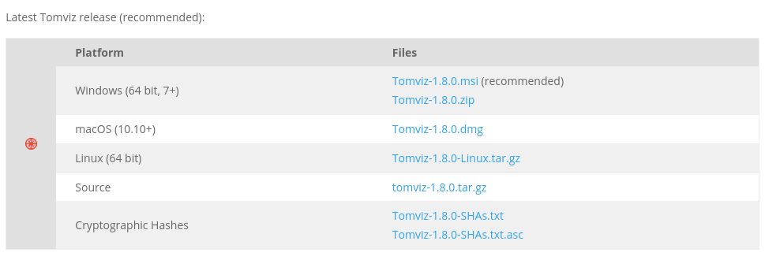

Reproducible Computational Imaging of Tomographic Data
COIMG-053
Computational Imaging XIX
18 January, 2021
Marcus D. Hanwell, Computational Scientist, DAMA, BNL
Tomviz: 3D Materials Tomography
- Open source project, tomviz.org
- DOE SBIR—Kitware-Cornell collaboration
- Phase IIB—Kitware-Michigan collaboration
- Now complete, final report submitted 2020
- Focus on 3D tomography for materials
- Go from acquired data to final reconstruction
- Possible to obtain atomic resolution in 3D
The Tomviz Application
Download Tomviz 1.9
Go to tomviz.org/downloads now! Goals
- Convert MATLAB tools developed at Cornell
- Required experts to use their code
- Scalability issues, separate visalization tools
- Required expensive MATLAB license
- Develop a user-friendly, open source tool
- Desktop application aimed at experimentalists
- Offering an environment that can be extended
- Primarily developed in C++
- Python/Python wrapped C++ code
Goals
- Provide a single software application for workflows
- Make materials tomography reproducible
- Research into new reconstruction techniques
- Permissive BSD license—maximize reusability
- Including commercial reuse/proprietary
- Provide cross-platform self-contained installer
- Highly interactive data visualization tool
- Hardware acceleration and background threads

- Powerful—CPU, GPU, memory
- Open source—BSD, GitHub
- Open languages—C++, Python
- Open formats—TIFF, MRC, EMD (HDF5)
- Scientific—SciPy, NumPy, ITK, VTK
- Cross-platform—Windows, macOS, Linux
- Shareable—Self-contained packaging
- Reproducible—State files, pipelines
Tomographic Workflow
Data Collection: Experiment
Tomographic Reconstruction

Core Problem
- Tomography involves a complex set of steps
- Collection, alignment, reconstruction, viz, ...
- Choices at any step can profoundly affect results
- Changing early steps—rerun everything!
- Develop an automated software platform
- Make it easy to add new algorithms, etc
- Could these steps be published with results
- Review of all steps, not just first/last
Software Stack
Building Blocks
- Data sources
- Data read from files
- Derived data, i.e. recontructions of tilt series
- Operators
- Operations on the data sources
- Alignment, math, reconstruction, segmentation
- Modules
- Visualization, contouring, outlines, volumes
Python Operator
Operator Data Flow
Python Operator
# Transform entry point, do not change function name.
def transform_scalars(dataset):
"""Define this method for Python operators that
trnsform the input array"""
from tomviz import utils
import numpy as np
# Get the current volume as a numpy array.
array = utils.get_array(dataset)
# This is where you operate on your data.
result = np.sqrt(array) + 20
# Set the transformed data, it will displayed in Tomviz.
utils.set_array(dataset, result)
Make It Easy to Add Algorithms
- Develop natural Python code using NumPy
- Input 3D array from previous pipeline step
- API to update user interface on progress
- Provide an interactive editor for operators
- Translation to/from application painless using views
- Set output arrays, including tables, messages
- Background thread, seamless to operator developer
Reproducible Data Pipeline
- The pipeline is central to the application
- Document the path from raw data to final images
- JSON format developed for reproducibility
- Entire pipeline saved to the
XMLJSON file - Relative file paths to enable sharing
- Custom Python code embedded in state file
- Access to common file formats
- Operators run in a background thread
- Remain interactive as operations are applied
Fragments of JSON State File
"reader": {
"fileNames": ["../Recon_NP_doi_10.1021-nl103400a.tif"],
"name": "TIFFSeriesReader"
}
"camera": {
"eyeAngle": 2,
"focalPoint": [ 49.5, 107.5, 130.0 ],
"parallelScale": 175.8,
"position": [ -332.0, 90.8, 96.3 ],
"viewAngle": 30,
"viewUp": [ -0.034, 0.994, -0.1005 ]
}
Fragments of JSON State File
{
"type": "Volume",
"properties": {
"blendingMode": 1, "interpolation": 1,
"lighting": {
"ambient": 0, "diffuse": 1,
"enabled": false, "specular": 1,
"specularPower": 100
},
"rayJittering": true, "transferMode": 0,
"visibility": true
},
"useDetachedColorMap": false,
"viewId": 2200
}
Tomviz Pipeline
Tomviz Pipeline
Stripped Down State File: Pipeline
{ "dataSources": [
{
"reader": { "fileNames": ["SMALL_PtCu.emd"],
"name": "EMDReader" },
"operators": [
{
"label": "Marcus Transform 1", "type": "Python",
"script": "# Source of Python operator.\n",
}, {
"label": "FFT (ABS LOG)", "type": "Python",
"script": "# Source of second Python operator.\n",
"dataSources": [ { "label": "Output",
"modules": [ { "type": "Outline", "viewId": 2200 },
{ "type": "Slice", "viewId": 2200 } ] } ]
}
]
}
]
}
Using Python Pipeline Runner
marcus@dilithium:~$ tomviz-pipeline -s tomviz-custom-fft.tvsm
[09:18:17] INFO: Executing 'Marcus Transform 1' operator
Operator doesn't support progress updates.
[09:18:19] INFO: Execution complete.
[09:18:19] INFO: Executing 'FFT (ABS LOG)' operator
Operator doesn't support progress updates.
[09:19:59] INFO: Execution complete.
[09:19:59] INFO: Writing transformed data.
[09:20:03] INFO: Write complete.
Tomviz Pipeline vs Python Execution
Live Pipeline
Live Iterative Recontruction
People and Funding
We have a fantastic team of developers and collaborators including: David Muller, Robert Hovden, Chris Harris, Alessandro Genova, Brianna Major, Peter Ercius, Yi Jiang, Jonathan Schwartz, Elliot Padgett, Barnaby Levin, Colin Ophus, John Miao, Stuart Campbell, Robert Maynard, Utkarsh Ayachit, Sebastien Jourdain, Matt McCormick, Alvaro Sanchez, Dan Allen, Berk Geveci, Martin Turner, Dula Parkinson, ...
Also funding from the Department of Energy, Office of Science under contract DE-SC0011385
TEM Microscope at NCEM (LBNL)
Tomviz Data Acquisition

Tomviz Hackathon
Advanced Volume Rendering